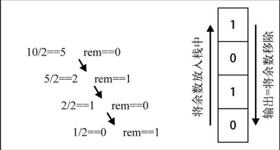

栈是一种后进先出(LIFO)原则的有序集合。新添加的或待删除的元素都保存在栈的同一端，称为栈顶，另一端叫做栈底。在栈里新元素接近于栈顶，旧元素接近于栈底。
栈一般在编程语言的编译器和内存中保存变量、方法调用等。
我们将创建一个类，来表示栈。
function Stack(){
this.items = [];
}
Stack.prototype.push = function(){
this.items.push.apply(this.items,arguments);
}
Stack.prototype.pop = function(){
return this.items.pop();
}
Stack.prototype.peek = function(){
return this.items[this.items.length-1];
}
Stack.prototype.isEmpty = function(){
return this.items.length===0;
}
Stack.prototype.size = function(){
return this.items.length;
}
Stack.prototype.clear = function(){
this.items = [];
}
Stack.prototype.print = function(){
console.log(this.items.toString());
}
//运用
let stack = new Stack();
console.log(stack.isEmpty());//true
stack.push(1);
stack.push(2);
console.log(stack.peek());//2
stack.push(3);
console.log(stack.size());//3
console.log(stack.pop());//3
console.log(stack.size());//2
stack.clear();
console.log(stack.isEmpty());//true
class Stack{
constructor(){
this.items = [];
}
push(){
this.items.push.apply(this.items,arguments);
}
pop(){
return this.items.pop();
}
peek(){
return this.items[this.items.length-1];
}
isEmpty(){
return this.items.length===0;
}
size(){
return this.items.length;
}
clear(){
this.items = [];
}
print(){
console.log(this.items.toString());
}
}
尽管代码看起来更加简洁，漂亮，但是变量items确实公有的。ES6的类是基于原型的。虽然基于原型的类，比基于函数的类更加节约内存，但是不能声明私有属性和方法。而且在这种情况下，我们不希望用户能够访问到items，因为这样用户就能随意改动items中任意位置的元素，从而失去了栈的基本功能；
下面尝试在ES6中创建私有属性：
ES6实现了一种基本类型，Symbol，它是不可变的，可以用作对象的属性。看看怎么用它，在Stack类中来声明items属性。
let _items = Symbol();
class Stack{
constructor(){
this[_items] = [];
}
//stack其他方法
}
这种方法创建了一个假的私有属性，因为ES6新增的Object.getOwnPropertySymbols方法能够取到类里面声明的所有Symbols属性。下面是一个破坏Stack类的例子：
let stack = new Stack();
stack.push( 5);
stack.push( 8);
let objectSymbols = Object.getOwnPropertySymbols( stack);
console.log( objectSymbols.length);// 1
console.log( objectSymbols); // [Symbol()]
console.log( objectSymbols[ 0]); // Symbol()
stack[ objectSymbols[ 0]]. push( 1);
stack.print(); // 输 出 5, 8, 1
从以上代码可以看到，访问stack[objectSymbols[0]]是可以得到_items的。并且，_items属性是一个数组，可以进行任意的数组操作，比如从中间删除或添加元素。我们操作的是栈，不应该出现这种行为。
有一种类型可以保证是私有的，就是WeakMap。WeakMap可以存储键值对，其中键是对象，值可以任意数据类型。 如果用WeakMap来存储items，Stack类就应该是这样的：
let Stack = (function(){
const weakMap = new WeakMap();
let _getItems = (key)=>{
return weakMap.get(key);
}
let _setItems = (key,val)=>{
return weakMap.set(key,val);
}
return class{
constructor(){
_setItems(this,[]);
}
push(){
let s = _getItems(this);
s.push.apply(s,arguments);
}
peek(){
let s = _getItems(this);
return s[s.length-1];
}
pop(){
let s = _getItems(this);
return s.pop();
}
isEmpty(){
let s = _getItems(this);
return s.length===0;
}
};
})()
事实上，尽管ES6引入了类的语法，我们仍然不能像在其他编程语言中一样声明私有属性或方法。有很多种方法都可以达到相同的效果，但无论是语法还是性能，这些方法都有各自的优点和缺点。哪种方法更好？这取决于你在实际项目中如何使用这些算法，要处理的数据量，要创建的实例个数，以及其他约束条件。最终，还是取决于你。
现实生活中，我们主要使用十进制。但在计算科学中，二进制非常重要，因为计算机里的所有内容都是用二进制数字表示的（0和1）。没有十进制和二进制相互转化的能力，与计算机交流就很困难。
要把十进制转化成二进制，我们可以将该十进制数字和2整除（二进制是满二进一），直到结果是0为止。
举个例子，把十进制的数字10转化成二进制的数字，过程大概是这样：

下面是对应的算法描述：
function divideBy2(decNumber){
let stack = new Stack(),temp,result='';
while(decNumber>0){
temp = Math.floor(decNumber%2);
stack.push(temp);
decNumber = Math.floor(decNumber/2);
}
while(!stack.isEmpty()){
result += stack.pop().toString();
}
return result;
}
console.log(divideBy2(8))在这个基础上，我们很容易将上面的函数改造成十进制转常用进制（2,8,16）的通用方法。
function baseConverter(decNumber,baseNumber){
let stack = new Stack(),temp,result='',digits = "0123456789ABCDEF";
while(decNumber>0){
temp = Math.floor(decNumber%baseNumber);
stack.push(temp);
decNumber = Math.floor(decNumber/baseNumber);
}
while(!stack.isEmpty()){
result += digits[stack.pop()];
}
return result;
}
console.log(baseConverter(13,2))
console.log(baseConverter(13,8))
console.log(baseConverter(13,16))